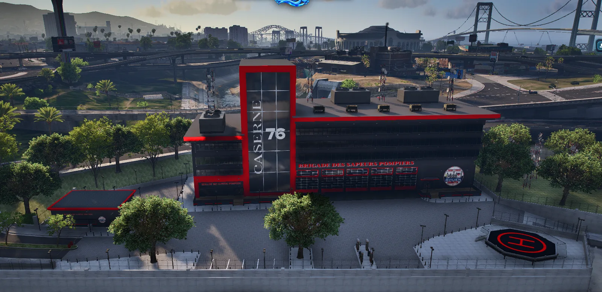

Accueil/Entreprises
Pôle légal
Entreprises légales
Services publics, commerces et institutions. Les entreprises disponibles peuvent être reprises sur demande auprès du staff.
Pour reprendre une entreprise disponible, clique sur « Postuler » : tu seras redirigé vers le Discord pour ouvrir ta demande. Le staff étudie chaque candidature et te recontacte.

Une question sur une reprise ?
Le staff te répond directement sur le Discord.